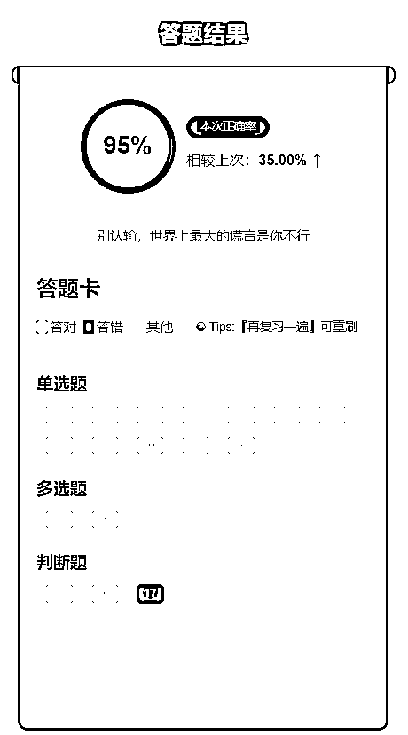

来源：https://o0yvn3o31a.feishu.cn/docx/SVgZdKZ6HoRcXNxvbqMcMSE7nQd
大家好，我是黄岛主！
最近看了星球里很多圈友写虚拟产品方面的文章，有各种赛道、也有各大平台等去做虚拟产品的私域、或店铺等变现方式，可以说是五花八门、百花齐放。看完之后，我的手都有点痒痒了，也打算也写一篇关于虚拟产品的一些玩法。因为忙新的项目，我也确实很久都没有在星球发过文章了。所以，我今天抽出时间写一篇复盘总结吧，我把他称作为真正意义上的蓝海虚拟产品变现玩法，操作平台可以多元化，而这次以小红书引流私域变现为案例哈！
上面说了，我现在做的是真正意义上的蓝海虚拟产品，是没有夸大其词的，因为当别人在做小学资料、英语启蒙、考研等虚拟资料的时候，我已经在做虚拟产品信息差之外的蓝海产品了，而且需求很大，就跟每年高考一样，一批又一批的需求者，每年都可以去做这类蓝海虚拟产品。举个例子，最近卖高考志愿的张雪峰，6天干了6个亿，没火起来之前，你知道高考志愿填写也能赚钱吗？其实是一个道理！
看到这里，你肯定会问我：是什么样的蓝海虚拟信息差，这么牛逼？来，感兴趣的，我们继续往下阅读！
看下面的这张图：这是五月底的时候一位圈友发的风向标，是关于银行金融业的虚拟资料变现情况，其部分配文是这样写的：这个行业客户普遍有，对于材料类的还是空白，付费意愿和能力都足。而且，这个账号没做几个，已经有14个小红书群了，单个客户598收费！
好，看这里，你会觉得：卧槽，就单单一个银行金融类的赛道，就这么牛逼吗？其实吧，主要还是市场来决定的，但是我可以证明这个是真的，这个圈友分享的风向标内容确实是这样的。
来看下小红书的银行赛道的数据：
如果你从事银行这个赛道或研究下来看：不管是从市场还是从定价来看，还是从购买需求来看，真的从来是不缺的。因为我们现在做的其中一个行业就是银行金融，暴力不暴力只有我们做过的才知道。当然，这个也不是每个月都赚到钱，因为最近一次银行考试时间是6.1号，当前的时间是已经过了，需求度会很少了，不过隔一段时间还有考试哈！
来，简单的看下我们做银行虚拟资料的出单图，单科19.9啦：
关于定价这块，每个同行参差不齐，可能人家资料也是不一样的，不同标准的资料就不同的价格。就比如第一个图的报价：刷题的一科20、两科40。押题的一科68，两科138。还有一科699和两科1299的，这只限于银行赛道哈！
再看看证券从业的赛道，单价两科29.9，因为证券就两科总共，单课一般买的也少！
再比如这个社工虚拟赛道，但是这周要考试了，最近不好出单：
当然了，别看这个单价低，批量上号，全网推广，比如小红书、抖音、快手、今日头条、视频号等多个引流平台，当私域流量跑起来之后，变现情况是非常可观的。还有个重点是：这个用户需求很强烈，考试的人都会提前很久来找资料学习或者看押题等等。关于推广时间段，后面的文字里我也会讲一下！
下面是简单的流量图：我们最近引流比较分散，把几个要考试的赛道都做了引流，如图所示，还有审计师题库的需求！
说真的，这种做时间长了都是纯利润的，除非你的题库是代理别人的，基本上我们可以去淘宝买资料自己整理，但是自己整理肯定也麻烦，其实我们就是自己整理的，发现这个变现情况还不错，然后把整理后的然后申请了作品著作权，这样防止同行倒卖，自己卖也不会出事。
所以说，我们有多少圈友是做这块的？或是看完以上内容的你是知道这些行业的？我没事的时候会逛逛星球的风向标，看过部分圈友发过类似的内容，但是可能也只限于发了，他自己肯定没去做啦。而且，就算自己已经在做这类赛道，可能也很少跟别人说哈，因为确实是真正意义上的蓝海，玩的就是信息差哈。
讲完这些，可能会得罪某些圈友，因为行业让我写了出来。但是，我想说，这个行业容纳同行可以有很多，不影响我们自己做，只要能帮助大家扩展更多的蓝海信息差，这篇复盘文章就很值得！
来，下面我们详细的对这个考题赛道介绍一下：
首先，我说明下，我们不能仅仅局限于我们上面所说的银行、证券、社工等赛道，因为每个行业都是有考试时间的，过了这个时间段可能就不好推广了，下面这张图是下半年考试的几个大行业，可以简单看看：
当然，你可别说这个没人买哈，只是你并不知道这些行业，就拿一个银行中级和初级考试来讲，你平时不接触银行，你是不知道这些的，就算知道可能涉及不深。
来看下这张图，每年报考人数，按照万单位去看的，这个是有真实数据统计的，我这里也整理了下，光初级银行从业者就有100W人入局！同时也让大家看看这些蓝海赛道的从业者到底有多少：

说真的，这个就像我们考驾照是一样的，我们学车考科目一和科目四的时候，每天就是抱着手机在软件上刷考题，然后到日期了去考试，我当年因为忙工作室没怎么看考题，导致我科目一都不想去考试，被我老婆了连打带骂去考试的。
当然，你说驾考赛道赚钱吗？肯定赚钱！因为还有很多人不知道的是：一个驾考虚拟项目都可以半个月在淘宝上做到40000+的利润，就看星球里的这篇文章，这是上年的一个圈友写的文章，虽然我不认识，但他是自己开发的小软件传的考题去做在淘宝上卖的，因为我们操作的也是这样的变现模式！
所以说：信息差是永远存在的，你永远不知道下一个信息差是什么，下一个赚钱蓝海是什么！
好，来看下具体有哪些行业是每年大方向上需求大的赛道：
注意：我说的这些可能你从没听过，或者你听过只是你不熟悉，但这些的的确确是真正意义上的蓝海信息差！
金融类：
初级银行、中级银行（一般一年2次考试，，具体看官网公告）
证券从业、证券分析师、证券投资顾问（一般一年4次考试，具体看官网公告）
期货从业、基金从业（一般一年1-3次考试，具体看官网公告）
财会类：
会计：初级会计、中级会计、注册会计
经济师：初级经济师、中级经济师
建工类：
一级建造师、二级建造师
教资类：
教资笔试（幼小初高）
教资面试（幼小初高）
公考类：
教师招聘、事业编、公务员考试（这个赛道可能做的人多一点，圈内有几个做公考的）
以上这些是参加考试人数比较多的考试，可以说只要你能长时间去做，这些赛道可以让一个工作室吃饱喝足！
光知道行业不行，还得知道考试时间，不然没法操作哈。来，下面的官网考试时间公布：
银行从业：https://www.china-cba.net/Index/show/catid/15/id/43018.html
证券从业：https://www.sac.net.cn/cyry/kspt/kstz/
期货从业：https://www.cfachina.org/aboutassociation/associationannouncement/202401/t20240112_64266.html
基金从业：https://www.amac.org.cn/xwfb/xhyw/202404/t20240416_25423.html
其他行业的考试时间，可以在小红书搜，也都能搜到！
根据我们实操积累的经验来看，可以说上面这些考试基本下来覆盖全年的，而且我们每个月都有推的，具体推哪个，看同行就可以，因为同行是我们最好的老师，而且我们是工作室做的比较大，个人的话可以挑几个行业去做做！
来，再来看下面这些是每个月的考试情况，这些都是我们积累下来的经验，无私分享给大家：
1月：教资上半年笔试、事业编
2月：教资上半年笔试、事业编、公务员省考、证券从业
3月：教资上半年笔试、初级会计、事业编、基金从业、证券从业、教师招聘、公务员省考
4月：教资上半年面试、初级会计、基金从业、教师招聘、公务员省考、二级建造师
5月：教资上半年面试、初级会计、期货从业、基金从业、证券从业、二级建造师
6月：教资下半年笔试、中级会计、注册会计师、济经师、期货从业、二级建造师
7月：教资下半年笔试、中级会计、注册会计师、济经师、期货从业、一级建造师
8月：教资下半年笔试、中级会计、注册会计师、济经师、证券从业、一级建造师
9月：教资下半年笔试、中级会计、济经师、期货从业、基金从业、证券从业、教师招聘、公务员国考、一级建造师
10月：教资下半年面试、济经师、期货从业、基金从业、证券从业、教师招聘、公务员国考
11月：教资下半年面试、济经师、期货从业、基金从业、证券从业、教师招聘、公务员国考
12月：教资下半年面试、事业编
基本上我们确定了每个月的考试内容和时间节点，我们还要把具体的推广时间定下来，这个考试和其他考试不一样的，一般分为3个阶段：报名阶段、打印准考证、考试。
而考生消费高峰是报名阶段、打印准考证到考试期间，我们需要在这两个时间段要加紧推，具体时间每年略有不同，如果你不知道具体的建议去小红书看下同行，你去看看其他人都是什么时间段推广的，这个我不多说，懂得自懂哈！
好，赛道和时间段我们都知道的，然后要推广的内容我简单的说下：
注意：你不能直接做题库的关键词，这样是不精准的，而且用户搜索需求很少的，我们一般都是下面这些为主：
1、题库图文
2、电子版资料图文
3、押题/密押卷图文
4、考点重点图文
目前押题是比较好引流的，而且图文方式直接模仿同行就可以，找同行也很简单，搜索资格证名称就可以，下面也会详细说明的！
关于引流，我只分享小红书的引流方式，因为这个已经够我们操作了，如果是工作室可以以此类推去做其他平台引流！所以，下面我详细的跟大家说下小红书的详细SOP操作！
一、小红书账号注册
小红书注册还是很简单的，有手机号和手机设备就可以去注册，流程包含这些：
1、手机里下载小红书APP
2、选择手机号登录
3、输入手机号，获取验证码，勾选已阅读并同意
4、然后点击登录
这里不详细说明了，但是有几个注册要点，我简单说下：
1、一机一号一ip：单独一台手机，一张手机卡，用流量注册哈，需要流量卡渠道也可以找我推。只要你保证注册的是新号就行了。
2、注册时，生日选择大概1个月内的。因为小红书生日当天会发一张生日流量券，有效期半个月，这个到时候有利于发笔记的时候使用！
3、小红书注册需要选择年龄：30出头就行了；爱好什么的，随便选就行了。
4、先不用修改小红书名字，也不写简介。建议发了3篇笔记后，再改名字和写简介，不要一上来就改哈。
5、我是建议大家新开账号，或者把老账号注销掉变成新账号，不要用发过其他内容的老账号来做这个项目。
第一点：老账号如果长期发一个领域的内容，标签已经定死了，换个赛道不容易热门
第二点：你的老账号可能长期没发布，账号权重流失严重，再发就不热门了
所以：空白新号，你从0-1去做会更顺畅，不会有那么多的烦心事
关于注销方法无限注册小红书新号的方法，我也说下：
0、打开小红书，找到我→点击左上角三条杠→左下角设置→账号与安全→能看到设置的界面
1、找到绑定信息，绑定自己的qq或微信都可以，这个每次注销之前都要操作一遍
注意：除了QQ，还有苹果ID，微信、微博，都可以绑定，注销后用绑定的这些账号去登录就行了。
2、绑定号之后，再去点击最下面的 注销账号，注销的时候会让你先验证身份，验证下即可
注销原因：其他原因
3、注销之后，然后用你绑定的qq或微信 去登录小红书
4、登录后，可以到设置界面 去解绑QQ，而下次注销前重复绑定QQ即可。完了之后，再去绑定自己注销前使用的那个手机号。
5、绑定好手机号，完了之后，就是新号了。
6、手机的通讯录，最好添加10个认识人的手机号，打开之后，默认发现好友，这个是模拟正常用户注册哈，如果本来有就不要考虑这个。（APP允许访问通讯录就可以）（手机设置里设置允许访问通讯录）
二、小红书养号方案
说真的，有时候我们不养号，账户注册完直接发布笔记，有适合觉得养不养发完都是一样的效果，但是我们直到现在，都是边养边发的方式了。
所以，你要养号的时候，你定位好赛道，一个赛道一个账号，比如你做的是银行考试赛道，那么这个账号就都做银行考试的内容。那么养号就简单了，多搜索银行考试押题、考点重点、题库图文等方面的内容，也就是模拟正常人去刷笔记这样。
账号注册完成以及养号完成后，就开始找素材做笔记内容了，这个很简单，下面我们详细看哈！
三、素材挖掘的方法
素材是最重要的，引流需要看客户需要什么，要把时间花在这里，也就是花在了刀刃上！
一般考生喜欢的关键词，学霸笔记，重点考点笔记，考前狂背，押题，密押，考点总结，知识点总结等等这种词，最能引起考试的注意，也最容易点击引流。可以参考做的好的同行，本文以银行从业考前狂背为例。
素材的来源方式很多，淘宝、拼多多、百度文库、小红书同行等等方式，关键是先找好上面说的关键词，然后针对性的找素材，实在找不到，找到相似的，例如找不到考前狂背，那么可以找重点笔记，押题，密押也一样。
比如这是找到的素材：


当然也可以直接截图刷题小程序的界面引流，因为很多同行现在都做小程序考题为主了，我截个图大家看下就知道了！

四、素材做相关处理
1、素材转成图片
找好素材后，用截图的方式，保存成图片，截图很简单，用电脑版微信，或者QQ都可以。

电脑版微信的聊天框有一个剪刀的按钮，可以截图保存成图片。
这里需要注意，截图的时候，尽量保持尺寸接近，方便后边使用这些素材图片。
2、图片加贴纸
下方文件夹是我找好的素材，我的这篇笔记围绕考前狂背展开。
很简单，就5张图，一般3-7张图就够了，不用太多。
下面我们要把图上面加贴纸文字，需要在电脑上操作，用美图秀秀即可，软件在下面链接，自行下载。
链接：https://pan.baidu.com/s/161F6zLKra9PnjWWdxGSEbg?pwd=hol8
提取码：hol8
五、笔记内容详细操作
1、 打开软件，载入图片

2、图片载入之后，会显示在软件中间位置
3、点击文字水印
输入文字、会话气泡、水印、漫画文字、文字贴纸都可以用，按自己喜欢的来就可以，但有的贴纸是VIP才可以用的，不用办VIP，免费的足够用了。
4、这里就是一个熟能生巧的过程，刚开始，每个贴纸都点一下看什么样子，后面熟悉之后，2分钟左右一张图，下图就是我刚刚做的。
注意，图里面的文案内容，一定要有噱头，可以参考同行的文案。
5、这个图文一共是5张图，其中第1张把噱头的文案都写上，后面的4张，简单写一写就可以，因为在搜索列表页面，看到的是第1张图。
做好之后，点击右上角保存

这里一定选jpg，高画质，然后保存。
6、下图就是我刚刚做好的5张图片
这样就做好了，很简单哈，拼的就是执行力，所以基本上新手看完直接上手操作这个项目了！
六、小红书发布方案
小红书发布方法很简单了，一天发2-3篇即可！但是发布是有很多细节要点的，这里我需要跟大家说明下，具体下面看下：
1、我是选择流量还是Wi-Fi？
如果你只有一台手机做小红书，可以用Wi-Fi。如果你做多个小红书账号，一定要用流量发布，我们要保持一个网络环境去做一个账号！
2、发布时间
我们的客户是早上7点到晚上11点活跃，半夜偶尔也会蹦跶出一些人找你的。所以，我们的发布时间尽量是白天发，如果非要晚上发，不要超过9点，9点后就没啥效果了！
3、发布时需要添加音乐或者贴纸吗？
因为小红书发布的时候有显示音乐和贴纸，所以很多人可能会去添加。但我们这里是不需要添加音乐，按照笔记图片顺序一张一张图添加就行，贴纸可以选择添加水印贴纸，无所谓。
4、标题怎么写？
说真的，标题、标签，都是抄同行，没什么太大的写法，主要就是拷贝同行的标题，然后加个表情，或者AI下！
我们举个例子，上面的标题，我们用讯飞AI下，可以给出三个标题，这个是讯飞星火免费的，可以百度下，也可以找我要都行！（https://xinghuo.xfyun.cn/）

5、文案怎么写？
文案更简单，也是抄同行的，然后自己加表情或者AI洗稿
以这个为洗稿案例哈，也是讯飞AI下：
也可以用文心，我觉得文心比讯飞好用：

说真的，哪个AI生成的都没事，因为文案的目的就是给标题作为补充说明你有什么，另外一点是，铺关键词。
6、标签写什么？
标签就是带井号的内容，如图：

关于标签，我们可以理解为关键词，这里也是在铺关键词的。
注意：如果你匹配的标签不相关，吸引到这部分的人过来，发现牛头不对马嘴，没看几秒就退出去了，是会被系统判你这个笔记不够吸引人，当该标签吸引的人越多，越没有互动，那你的笔记就会被系统认为是不好的笔记，就更影响笔记流量了。
7、发布后需要做什么？
首先，新号发的第一篇笔记，2小时内，看看有没有收到系统恭喜你发了第一篇笔记，如果有，就是正常的。
如果没有，2小时后，再上去看看小眼睛多少，低于100就得找找问题了，可以找我交流的。
然后，发布2小时后，去搜索你笔记，看看能不能搜索出来，能的话就是正常的，因为被收录了！
最后，发布之后，尽量给自己的笔记点个赞、收藏一下，然后唱下双簧，引导别人去找你询单！
总结一点就是：小红书发布的文案，标题，话题这些，都参考同行即可，正常1天发3篇以上，不要断更，保持账号权重。
七、小红书引流
小红书引流比较简单，我分享一些我们常用的引流方式给大家参考借鉴：
私信引流：3种操作方法！
群聊引流：如何创建及关联笔记？
评论引流：引导用户私信及群聊被动引流！
引导私信↓
使用群码配合群聊引流↓
还有一些注意事项说明下：
1：一定用谐音字代替正常文字,卫、喂、丝、斯、思，灌注，观我、灌我等
2：引流图片或话术，多图轮替使用，避免系统识别
3：回复不要太频繁，避免系统屏蔽，建议10-15人一组发布，歇10-20分钟再继续
4：除了发引流的内容，其他都不要聊
引流的一些建议说下：
1：不建议所有引流方法都用！
2：推荐群聊引流（小号配合相对安全）私信引流（效果最直接，也容易被风控）
3：评论区只回复一条引流信息，然后置顶评论
4：大号只管搞流量，拉人进群，小号配合发广告
5：个人号引流有风险，别怕死号，把账号当做消耗品
说下引流到微信的成交话术：
我这里简单说下，其实我们也都是把同行的拿过来测试修改的，基本上没什么难点，因为用户的需求很强，价格不是太高，资料不错，基本上都可以快速接受的！
大概话术可以参考我这个：
有的同行直接说可以押中原题，有多少道原题这种，但本着诚实的原则，不建议这么说，可以用如下的话术：
实话实说，可以押中类型题，每年考试80%左右的知识点都能押到，但原题不一定，每年考试同一个知识点，出题老师都会变题干，选项顺序。好多同行说能押中原题啥的，都是骗人割韭菜的，押题的核心逻辑是围绕知识点出题，通过押题掌握知识点是核心要点。
①、亲亲，距离考试仅剩xx天了，如果对下个月考试没有把握话可以了解下咱们题库，覆盖95%的考点知识点。接下来的时间只要您认真去做，通过考试肯定没有问题！时间不多，希望您可以认真考虑下。
②、题库适零合基础及基础弱薄的备学考员，提交备考效率，覆盖95%的考点知识点，认真刷题，都可以通过考试的。
③、紧急通知！24年中xxx考试报名将于下周x（x月x日）正式开启报名通道！！请务必关注！如果想今年1次通过，务必上车我们的题库，覆盖95%的考点知识点，认真刷题，都可以通过考试的。
④、x月xxxx考试记得打印准考证！
考试时间：x月x日-x月x日
考前押题有售
零基础，不用看书，刷题就够了
押题最佳冲刺阶段
覆盖95%考点知识点
价格:一科xx；两科xx
⑤、xxx考试明天开始报名啦
xxx考试明天开始报名啦
您准备好了吗
考试很现实，差1分都要再来1年
纠结犹豫千万次，不如认真行动1次
抓好3个月黄金备考期！跟着题库认真刷题 考过没有问题
⑥、观望1天，就少学1天
观望1月，就少学30天
考试不会因为你的观望减轻考试难度、考试也不会因为你的观望，报考人数就减少，学习的距离就是这样一点一点拉开的
零基础 没时间 基础差
覆盖95%知识点考点的题库要不要？
认真刷题，就可上岸！
⑦、同学，距离xxx考试还有xxx天
我们的题库适合
【1】基础薄弱，信心不足，备考无重点
【2】做题正确率不高，效率低
【3】到现在还没有怎么开始学习的
覆盖95%知识点考点，认真刷题，即可上岸
⑧、xxx考试题库包含：
【1】章节题库+历年真题+练习题库+模拟题库+冲刺题库+考前预测+知识点题库+做题记录+错题重做
【2】x种xx考试学习必备资料
【3】涵盖95%知识点考点，同时考试还有大量的原题类型题出现
通过率超高，所以都是收费的哈~
一科价格：x元
二科价格：x元
三科价格：x元
⑨、时间少，前面学，后面忘
自制力薄弱，经常溜号
想今年通过，拿证，不要犹豫
95%知识点考点都在里面，了解一下？
咱们这边的题库都是根据大纲来更新，如果大纲更新变动不大，题库也就更新不大的，具体以大纲为准。
不是免费的哈，其实大家都知道，越是免费的越是最贵的，而且没有任何服务！Xxx考试是非常重要的，给你一个过时的或者不适用的题库，反而会浪费你的时间，损失会更大的！咱们的题库是经过精心筛选，花费大量的时间和资源，对你肯定是有帮助的。
引流到微信的两种变现方式，我说下：
第一种：可以去淘宝买一些几块钱的资料，自己改一下名字，比方说，基金从业三色笔记，改成基金从业考前狂背，基金从业必考知识点等等，小红书图文就写免费送，好多考试看到资料名字不一样，以为就是不同的东西，就会加微信，送了资料，然后在微信上面卖题库。
第二种：直接开门见山，笔记不说免费，引流微信直接卖题库。
卖给客户的资料我说下：
1、淘宝买同行，然后自己整理资料
2、小红书上找同行，然后自己整理资料
3、或者自己整理资料做成小程序可以让客户刷考题
我们现在卖给客户的资料基本上都是自己做成了小程序，我觉得这样比较方便，因为现在同行基本上都这样去做的！
如果你想做这个项目的话，大家可以先做先去测试：到时候赛道的哪个出单了，我可以无偿送圈友一些考题资料的激活码，有激活码能看我们小程序里的资料，也算帮圈友一个忙了。当然，如果你不用我们的资料，也可以自己找同行付费买也行！
从这个月开始，我推荐大家做这几个赛道：初级经济师、中级经济师、中级会计、初级审计师、中级审计师、教资笔试、注册会计师、一级建造师，期货从业。
写在最后：
差不多这些，基本上以上的内容是我今天写的一个复盘，也给大家看看我们在做的真正意义上的蓝海虚拟信息差产品，如果你对这个比较感兴趣，看完以上复盘内容，完全可以自己去做，直接出效果。可能分享出来就卷了，但是现在什么项目不卷呢？所以，先用最强的执行力搞起来吧，需要什么可以找我交流学习！